KrISS feed
KrISS feed is a simple and smart (or stupid) feed reader.
To see an online example: http://tontof.net/feed
Feel free to contribute: https://github.com/tontof/kriss_feed
Table of Contents
1 Features
- KISS philosophy (Keep It Simple and Smart)
- Fast (the fastest RSS reader ?)
- Easy to install (if you find an easier solution, I'm all ears)
- Easy to personnalize (default style is ugly ? Just go and see Style)
- Easy to share with Shaarli but also others sharing tools using GET parameters of URL
- Mobile support using responsive web design
- Customize everything such as menu, paging to keep only what you need
- Auto mark as read when going to next item
- Add favicon to feeds
- Public/protected/private visibility
- Update manually/using javascript/using cron
- Keep items as starred
- List or expanded view
- Order by newer or older items
- Show unread or all items
- Keyboard shorcuts
- OPML import/export
2 Requirements
- php 5.2
- your server should be able to download external content
- DOMDocument + libxml2 (install php-xml)
- mbstring (install php-mbstring)
- recommanded: curl (install php5-curl)
4 Style
4.1 How to customize KrISS feed
That's easy you just have to create a user.css file into inc directory:
index.phpincuser.css
That's it !
4.2 How to colorize odd and even feeds/items
Inspired from Xinfe style
4.3 Screenshots
To install a style, just download the corresponding css file and place
into inc directory (rename into user.css if necessary).
Some styles need other files as font.
| author | screenshots | files |
|---|---|---|
| ali0une | 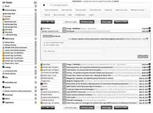 | css (other files) |
| 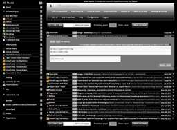 | css (other files) | |
| bootstrap | 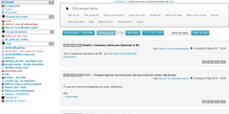 | css |
| geocities | 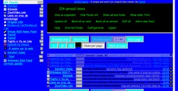 | css |
| greader | 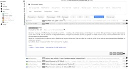 | css |
| grey | 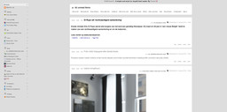 | css |
| orangina-rouge | 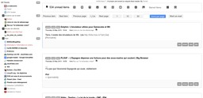 | css |
| p3ter | 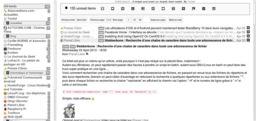 | css |
| pierre | 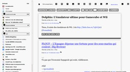 | css |
| sebsauvage | 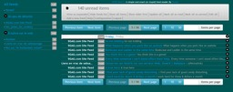 | css |
| tvelter | 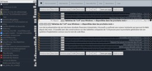 | css |
| vinc3r | 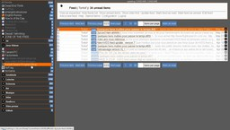 | css |
| xinfe | 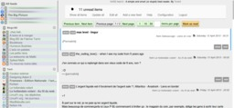 | css |
{kind=link}
{kind=link}
{kind=link}
{kind=link}
{kind=link}
{kind=link}
{kind=link}
{kind=link}
{kind=link}
{kind=link}
{kind=link}
{kind=link}
{kind=link}
5 TODOs
- fix css/html/js/php validation
- css : http://jigsaw.w3.org/css-validator/
- html : http://validator.w3.org/
- js : http://www.jshint.com/
- php : https://github.com/opensky/Symfony2-coding-standard
- opml : http://validator.opml.org (OK)
- https://github.com/tontof/kriss_feed/issues/97
6 FAQ (Frequently Ask Question)
6.1 Why did I create KrISS feed ?
I was using Google Reader and when Google decided to integrate Google+ it was for me the end (before the official one on July 1, 2013): "As a result of these changes, we also think it's important to clean things up a bit. Many of Reader's social features will soon be available via Google+, so in a week's time we'll be retiring things like friending, following and shared link blogs inside of Reader."
I have looked at existing solutions (rssLounge, tiny tiny RSS, …) but I was not happy so I've coded mine (as we say: "if you want something done right, do it yourself").
6.2 What is KISS philosophy ?
The KISS principle has many definitions and everyone lets define KISS as he wants. For me, KrISS feed should be as accessible as possible for everyone. That's why, there is for example, no SQL database to configure and a single file to copy for end users. But it should also be smart and that's why source code is easy to understand and well structured.
I'm not satisfied yet because there still a lot of work to do, but hey, there are just 24 hours per day :-)
6.3 Why I can not add or update my feeds properly ?
First of all check your feed validity: http://validator.w3.org/feed/
KrISS feed uses libxml2 and if the feed is not well formated, it will fail. Contact the feed owner to tell him to correct his feed.
6.5 How to reset KrISS feed password ?
You can not reset KrISS feed password, if you forgot your password simply delete the data/config.php file and display the page again. You will be asked for a new login/password.
6.6 How to stay signed in ?
For KrISS feed version 8. If it does not exist, create plugins and
sessions directories. Create a file session.php inside plugins
directory and add these lines :
<?php ini_set("session.gc_maxlifetime", '86400'); ini_set('session.save_path', $_SERVER['DOCUMENT_ROOT'].'/sessions');
It will create php session files into sessions directory.
You will then be connected for 1 day : 86400 = 24*60*60.
Think to delete session files into sessions directory from time to time.
This is not compatible if memcache is activated.
7 For developpers
7.1 How KrISS feed is organized ?
7.1.1 If you want to look at the code of KrISS feed, you have to look at src directory:
srcclass: directory for php classestpl: directory for templatesadd_feed.tpl.phpchange_password.tpl.phpconfig.tpl.phpedit_all.tpl.phpedit_feed.tpl.phpedit_folder.tpl.phpheader.tpl.phphelp.tpl.phpimport.tpl.phpincludes.tpl.phpindex.tpl.phpinstall.tpl.phplist_feeds.tpl.phplist_items.tpl.phplogin.tpl.phpnav.tpl.phppaging.tpl.phpstatus.tpl.phpupdate.tpl.php
Feed.php: modelFeedConf.php: kriss feed configuration managementFeedPage.php: viewMyTool.php: common toolsOpml.php: import/export opmlPageBuilder.php: template managementSession.php: session managementStar.php: starred items management
inc: directory for includesstyle.cssscript.jsfavicon.ico
kriss_feed.php: controllergenerateIndex: bash script to compile index.php fileindex.php: developpement version